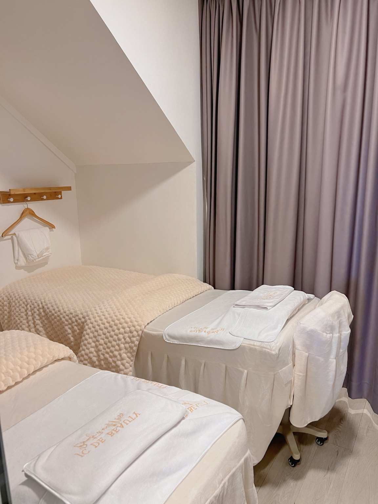
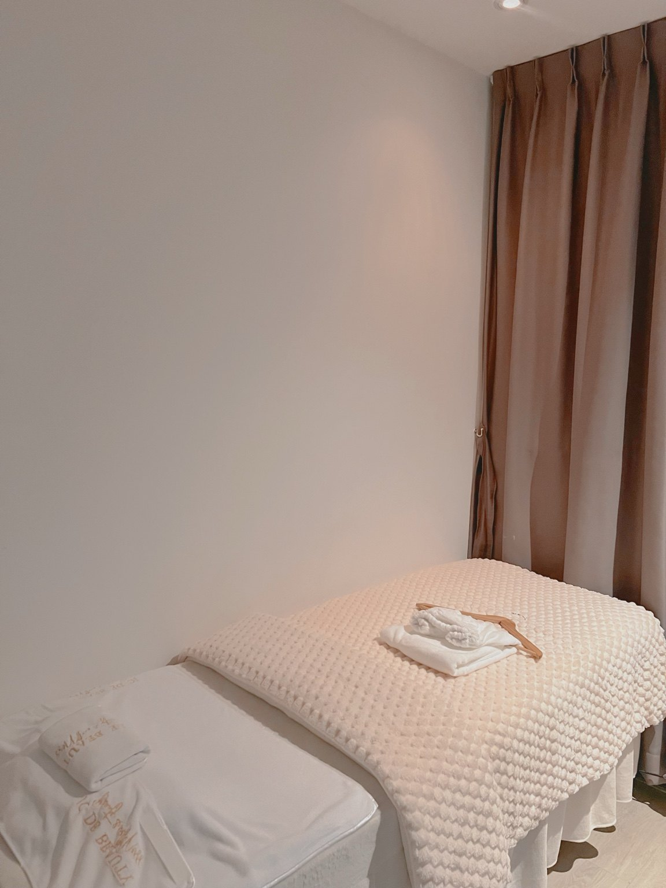
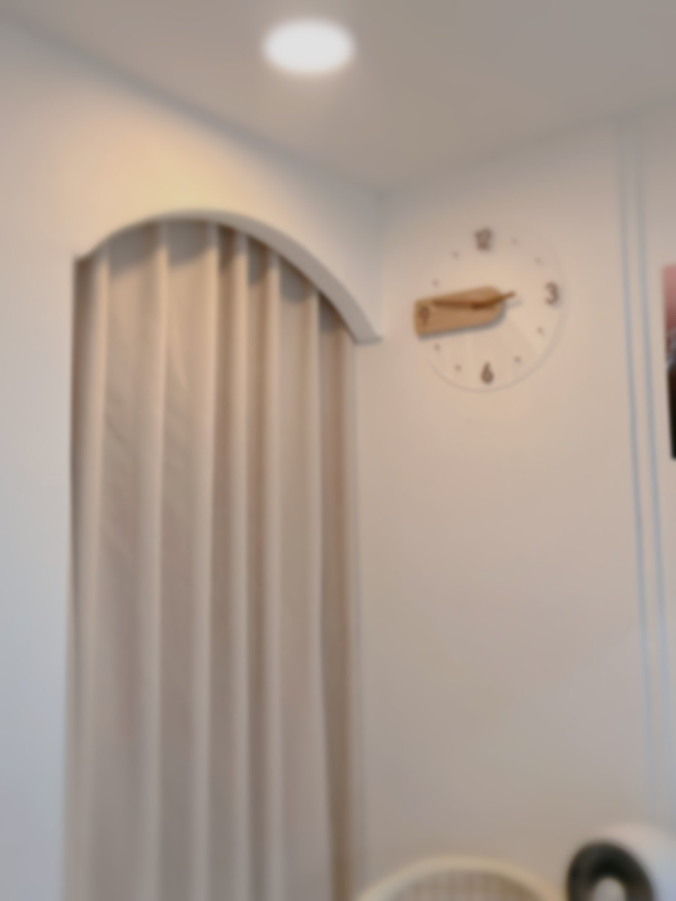
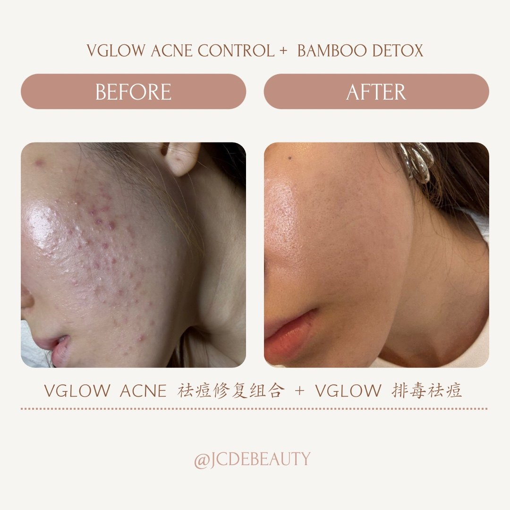
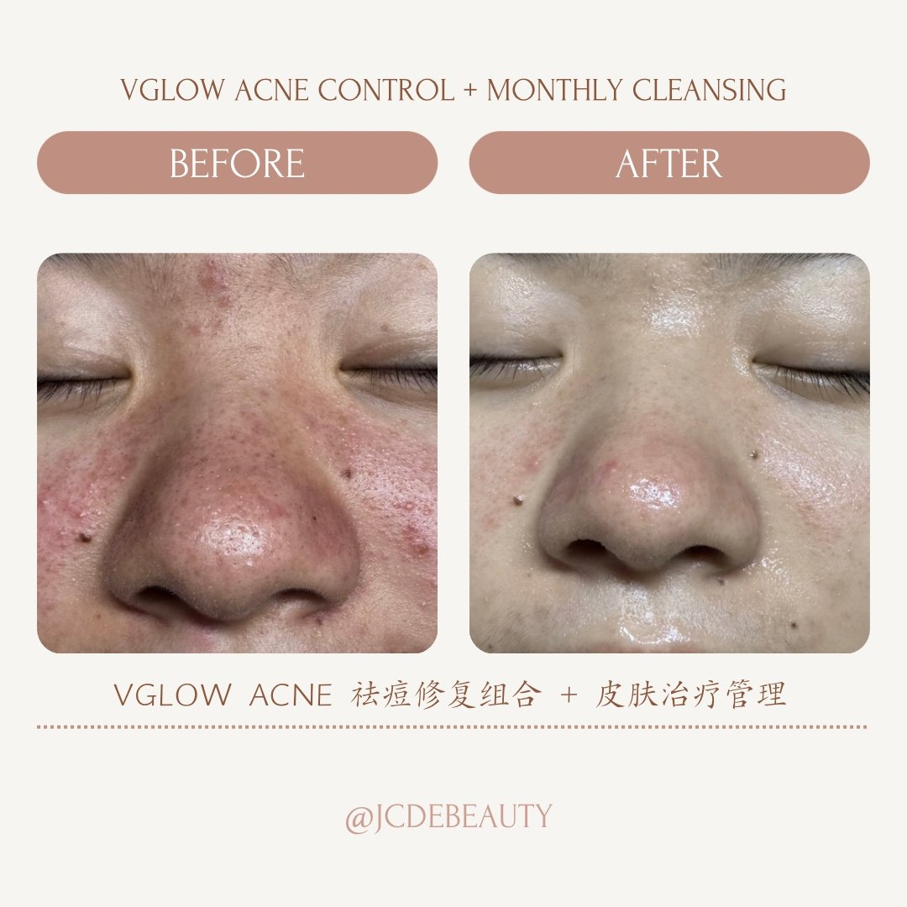
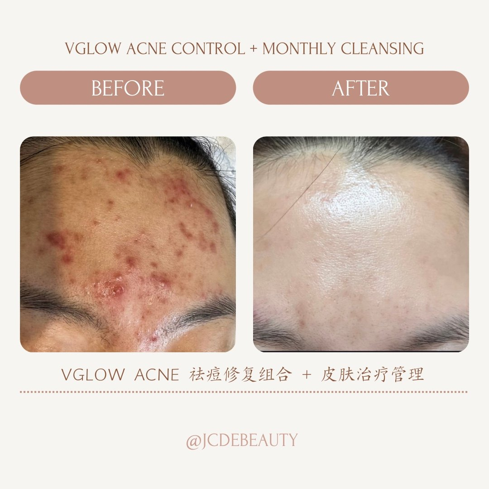
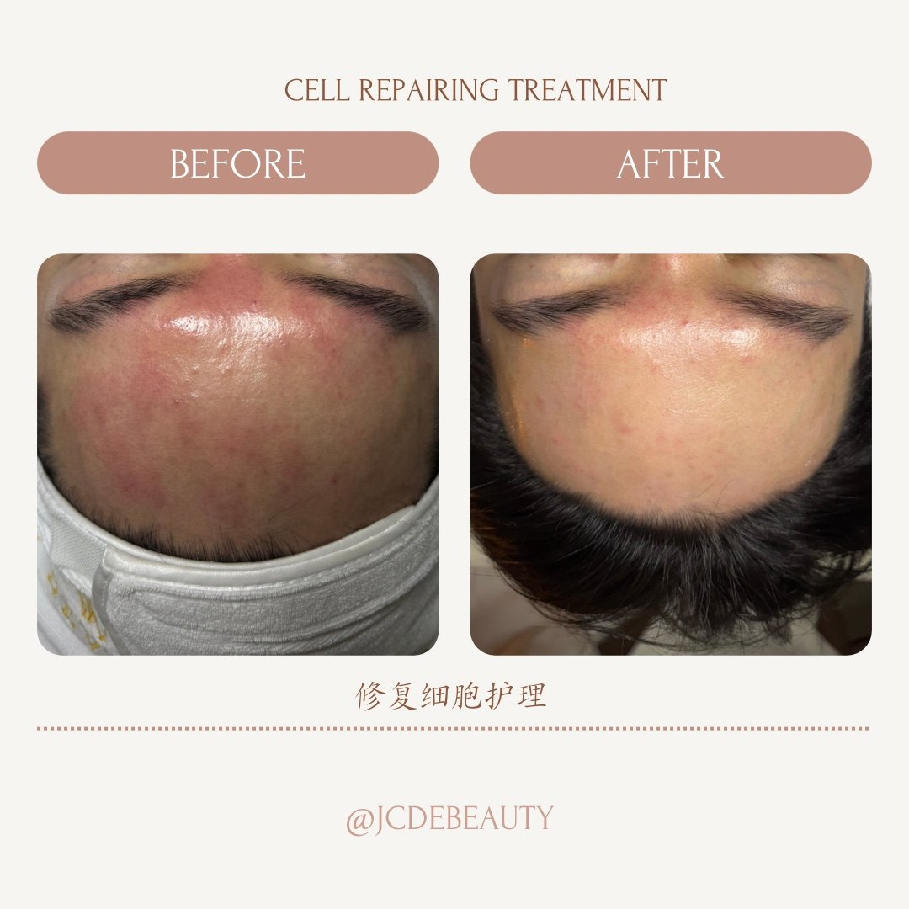
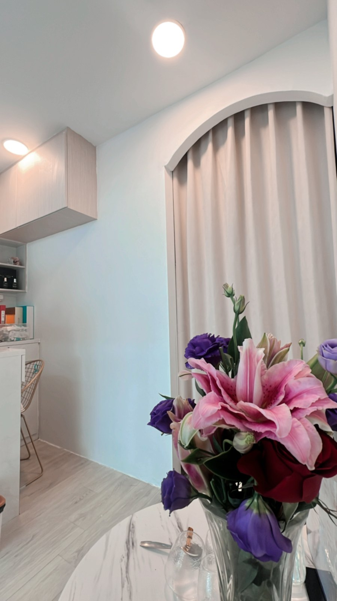

Blackhead Facial
针对黑头与毛孔堵塞的清洁护理，具体清洁方式按当天肤况确认。
S$88
每一张肌肤，都值得专属呵护。我们从了解肤况开始，定制适合的护理方式，温和改善痘痘、敏感、暗沉与毛孔问题，让肌肤重现稳定、细致与光泽。
我们把第一次咨询做得更细：看你当前肤况、生活作息、敏感程度和想改善的问题，再建议从清洁、补水、舒缓、提亮或痘痘毛孔管理开始。



顾客不一定知道项目名字，但通常知道自己哪里困扰。这里把护理方向讲得更直接，预约前就能大概判断适合哪一类。
适合容易爆痘、闭口、黑头白头、出油和毛孔粗大的肤况。
推荐：Pimple / Acne / Open Pore, Aqua Peel
适合皮肤紧绷、干燥脱皮、容易刺痛或最近状态不稳定。
推荐：Sensitive / Dehydrated Facial, Ocean Dew
适合想让肤色看起来更干净、更亮、更有精神的顾客。
推荐：Illumine Brightening, Royal Glow, Carbon Peel
适合第一次来、想做基础清洁，或想让脸部压力感轻一点。
推荐：Blackhead Facial, Healing Traditional Bojin
价格透明展示。最终护理会根据当天肤况、敏感程度和皮肤目标确认。
针对黑头与毛孔堵塞的清洁护理，具体清洁方式按当天肤况确认。
温和补水、舒缓干燥紧绷，帮助皮肤回到稳定状态。
针对痘痘、粉刺、出油与毛孔堵塞，适合需要更细致清洁管理的肌肤。
传统脸部拨筋舒缓护理，适合想放松、改善脸部紧绷感的顾客。
MTS 修护护理；具体护理安排会在肤况咨询后确认。
BABOR 定制面部护理；按肤况与护理方案确认价格。
焕活修护类护理，适合希望改善整体肤质与疲惫感的肌肤。
净肤、细致毛孔与提亮方向，适合油性、暗沉或粗糙肤况。
亮白透亮护理，适合肤色不均、暗沉和想提升光泽感的顾客。
补水护理方向，按当天肤况确认适合的护理安排。
光泽护理方向，适合想提升肌肤透亮感的顾客。
洁净护理方向，具体清洁方式按当天肤况确认。

先了解痘痘、敏感、缺水、暗沉、毛孔等重点问题。
根据当天皮肤状态建议合适护理，不需要自己猜项目。
在安静干净的空间里完成护理，让皮肤和人都放松下来。
护理后给简单保养提醒，帮助效果维持得更稳定。
展示真实护理前后对比，让顾客知道你不是只卖“感觉”，而是在认真处理皮肤问题。




效果会因个人肤况、生活习惯、护理次数和居家保养而不同。Results may vary by individual skin condition and treatment plan.
像一次简单的肤况小咨询，先了解你的主要困扰、最近状态和敏感程度，再给你一个更接近真实护理建议的方向。

“护理很细心，环境很舒服，做完皮肤感觉干净很多。”
“会根据皮肤状况建议护理，不会让人有压力。”
可以。你可以先做 Skin Quiz，或直接 WhatsApp 发肤况照片，我们会根据皮肤状态建议合适护理。
建议提前 WhatsApp 预约，方便安排合适时间，也能先了解你想改善的皮肤问题。
有些顾客一次后会感觉更干净、明亮或水润；痘痘、敏感和毛孔问题通常需要持续护理和居家保养配合。
可以。你可以先发信息说明肤况，我们会给你一个适合的护理方向。
107 Lorong 1 Toa Payoh, #01-256, Singapore 310107
JC DE BEAUTY
107 Lorong 1 Toa Payoh, #01-256, Singapore 310107
WhatsApp: +65 8215 2513